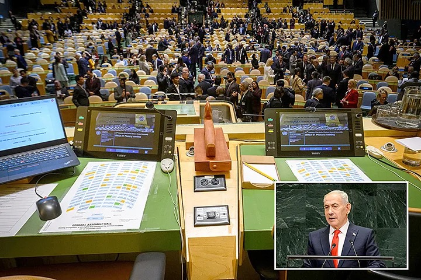

Global South in international organizations
What the walkout during Netanyahu’s UN speech can and cannot tell us

When Israeli Prime Minister Benjamin Netanyahu approached the podium at the UN General Assembly on 24 September, delegates reportedly representing 77 countries began leaving the hall. Representatives of a reported 40 countries remained, and others were absent. The contrast produced a striking image. The image alone cannot answer the political questions it raises.
- How many governments joined the walkout?
- Why did they do so?
- What, if anything, does remaining seated say about a country’s position on Israel’s conduct?
What a walkout is
A walkout is a form of diplomatic protest conducted inside the institution where the disagreement is being expressed. Delegates attend a meeting and visibly leave when a particular speaker is announced or begins to speak. Their departure signals that they reject giving the address the ordinary courtesy of an audience.
It does not remove the speaker’s right to speak. It is not a General Assembly vote. It does not mean that the departing governments have withdrawn from the UN. Its force is symbolic: it makes disapproval visible to the speaker, to other governments, and to the public.
What happened in the hall
In this case, the symbolism was deliberate. The Palestinian Mission had urged delegations to leave collectively when Netanyahu was announced. Delegates departed as he took the podium. Netanyahu called those leaving “moral cowards.” The exchange made the walkout part of the speech’s political confrontation, rather than a silent expression of dissent.
What leaving can show
The motivations are varied. Three are worth separating, because they do not license the same inference.
The clearest motivation is solidarity with Palestinians and protest against Israel’s conduct in Gaza and the occupied territories. Palestinian representatives explicitly sought a collective departure to convey opposition to what they described as genocide, war crimes, and occupation. For delegations responding to that appeal, leaving was a public refusal to treat Netanyahu’s address as routine diplomacy. That stated rationale explains the organizers’ purpose. It should not automatically be assigned, word for word, to every diplomat who exited.
A second possible motivation is opposition to a wider pattern of regional military action. The speech took place amid disputes extending beyond Gaza, including Israel’s actions involving Iran, Lebanon, and Syria. A government might therefore have joined the walkout for several related reasons, with different concerns carrying different weight. Without a statement from its delegation, a seat left empty cannot tell us which grievance was decisive.
There is also a distinct motive for acting together. A coordinated walkout allows governments to make a statement together that none could make as visibly on its own. The diplomatic act is directed at more than the speaker. It tells other states that opposition can be expressed openly and collectively. It tells domestic audiences that their representatives have acted. It attracts attention to a position that might receive less notice in a written statement. These are plausible functions of a coordinated protest. They should be understood as interpretations of the act, not as documented motives of each participant.
What staying cannot show
Those who stayed cannot be treated as a single political camp either. Some governments may have wished to hear and assess Netanyahu’s position while disagreeing strongly with Israeli policy. Others may have placed value on maintaining channels of communication, or declined to join this particular method of protest. Some may have been more sympathetic to his arguments.
The presence of a delegate establishes only that the delegation was represented in the hall. It is not a vote of confidence. China’s reported decision to retain one diplomat, for example, shows why “walked out” and “stayed” are too blunt as categories for a government’s entire position.
One gesture is not the whole policy
The distinction matters because diplomacy often uses several forms of expression at once. A government can condemn military conduct, support a ceasefire or Palestinian rights, and still keep a representative in the room. Another can leave the room while continuing diplomatic relations and negotiations elsewhere. To understand its policy, we need its public statements and actions beyond this one speech.
The walkout is evidence of a protest. It is not a complete map of international alignments.
The walkout thus shows both the power and the limits of diplomatic theatre. Emptying seats made opposition impossible to overlook. Those who remained prevented any simple reading of the hall as divided into supporters and opponents of Israel. The political significance lies in the decision to turn attendance itself into a message. Understanding that message requires listening to governments’ stated reasons, rather than asking an empty chair to speak for them.
Counts of who left and who remained are reported figures, not a roll-call vote. Scene report: World Visualized, “Dozens of UN delegations walk out as Netanyahu addresses General Assembly.”